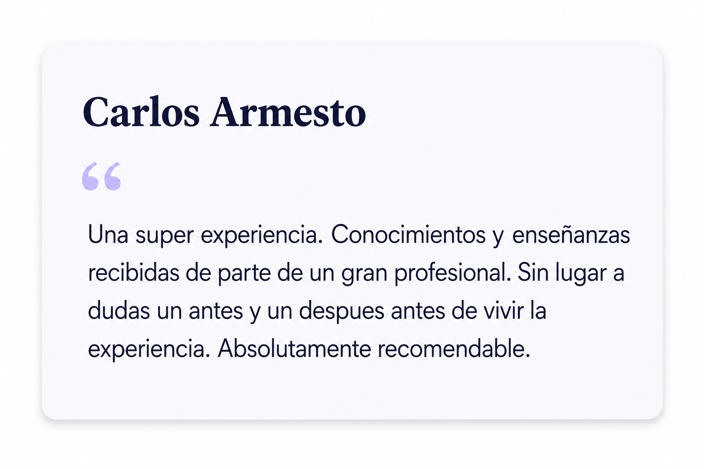
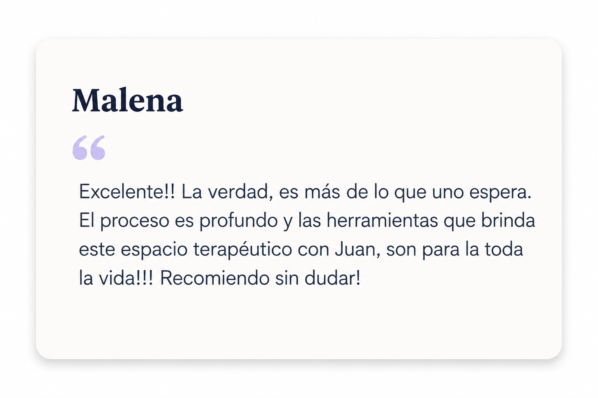
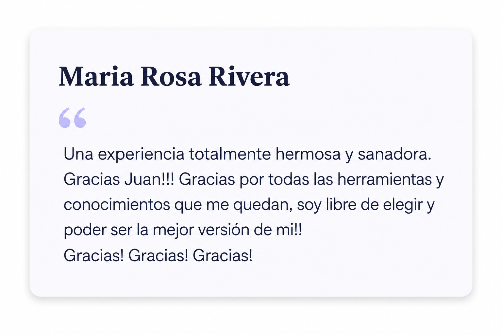

DESCUBRÍ LA
MENTIRA EN
60 SEGUNDOS
La mayoría de las personas no sabe cuándo le están mintiendo... hasta que ya es tarde.
Mirá la presentación del creador del curso
Situaciones que te generan dudas
Aprendé a identificar las señales antes de que sea tarde.
“no cerraba”
demasiado tarde
tu intuición
que después cambió
sin saber interpretarlas
y no las vi”
Tomar decisiones sin toda la información puede costar caro.
Herramientas prácticas para la vida real
Técnicas simples, efectivas y aplicables desde el primer día.
Contradicciones al hablar
Detectá incoherencias en lo que dicen.
Lenguaje corporal
Identificá gestos que revelan ocultamiento.
Respuestas evasivas
Reconocé cuando alguien evita responder.
Tensión oculta
Detectá señales físicas de incomodidad.
Manipulación emocional
Aprendé a identificar intentos de manipularte.
Micro señales
Detalles que la mayoría no ve.
Personas que ya lo aplicaron
Resultados reales de personas reales.



Invertí en tu tranquilidad y en mejores decisiones
- Curso completo y actualizado
- Acceso inmediato de por vida
- Desde cualquier dispositivo
- Actualizaciones futuras incluidas
Resolvemos tus dudas
Inmediatamente después de realizar la compra.
Desde celular, notebook, tablet o PC.
No. Está pensado para cualquier persona.